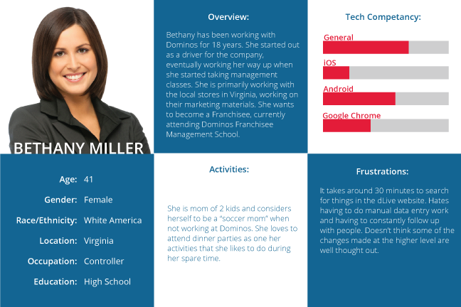
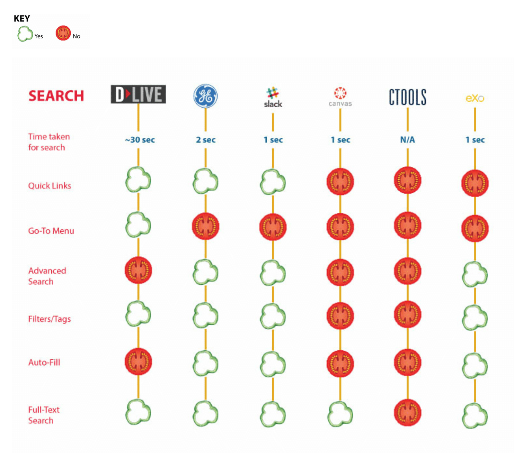

Dominos Pizza Intranet
I worked with 3 other students on improving the user experience of the company extranet of Dominos' Pizza called dLive.
Project Overview
Domninos Pizza is a Michigan-based multinational pizza restaurant chain. Their company intranet, dLive, is used by all company employees. From corporate team members to in-store team members, these employees generally use the site to retrieve team member contact info, view the company calendar, learn about development opportunities, take part in training, and more. I worked with 3 other UMSI (University of Michigan iSchool) students to work on this semester-long project that sought to improve the usability of dLive. This project was done in the Usability Needs & Evaluation course at UMSI. This project is under a Non-Disclosure Agreement, so I am not able to disclose most deliverables.
COMPANY
Dominos Pizza
ROLE
UX Researcher + UX Designer
DURATION
Jan 2015 - Apr 2015
METHODOLOGY + TOOLS
Camtasia, Qualtrics, Usability Testing, Survey Design, Persona Development, Heuristic Evaluation, Interviewing
TEAM MEMBERS
Vijeta Belandor, Karen Fernandez, Ram Kumarasubramanian
Interaction Map
We first started the semester off by creating an interaction map of the site. This is a systematic approach towards understanding the site's scope and variation. It gave us a broad perspective about most (if not all) of the possible actions a user could do in the site. Overall, this was a great opportunity to evaluate the site as a whole.
The process was comprised of taking screenshots of every action possible in the site and presenting it in a engaging and readable format for an audience that is new to the system. What we mostly found was a highly complex site with lots of levels of information, so it definitely gave us a good idea of what we were dealing with that semester.
Interviews, Personas and Scenarios
We then interviewed our client contact and 5 other team members at Dominos HQ in Ann Arbor who fit our target population. We conducted the interviews in pairs, giving each team member a chance to play the role of interviewer and note taker. We gathered very useful information that helped us get to know our users and what they need from dLive to be able to perform their job successfully.
Surveys
We created, piloted, and distributed a survey (using Qualtrics) that allowed us to get a broad and relatively shallow understanding of a much wider swath of the population and allowed us to answer questions about the frequency, prevalence, and co-occurrence of key attitudes, behaviors, and characteristics. We carefully chose our research goals and questions, our target population, and our sampling and recruiting strategies.
Comparative Analysis
Heuristic Evaluation
Afterwards, we started on the heuristic evaluation of the site. First, we defined the scope of the evaluation and discussed how to apply Nielsen's heuristics to our system. We then each completed an independent heuristic evaluation of the product, doing them in multiple passes (where one pass focused on heuristics 1-3, etc.) to ensure that all of the heuristics were carefully considered for each component of the product's user interface.
Usability Testing
We conducted 5 usability tests with Dominos' team members at the HQ in Ann Arbor, with a moderator and note-take present for each session, and using Camtasia to record the screen and audio. We developed a usability test plan that outlined our goals for the test, moderator script, the tasks we wanted users to complete, and post-test questions.
Outcome & Takeaways
To provide the final report, it involved holistically looking at all of the past deliverables and determining which usability issues were of highest priority and provide recommendations for those issues. This semester-long project gave us a great deal of experience with different types of user experience research methods. I really enjoyed usability testing the most because it was very eye-opening to see how users use the website in person and be able to catch non-verbal cues of frustration and interview these users more about their experience with the website.